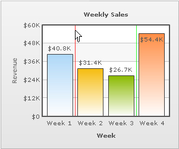

FusionCharts PHP Class API > Advanced Usage > Creating Vertical lines |
|
Vertical line is used as a vertical separator between blocks of data. The addChartData() function of FusionCharts PHP Class lets you create vertical lines on charts. Let's find out how to do it through the example given below: |
# Add chart values and category names # Add first vline # Add Second vline |
| In the above code snippet, we add two Vertical lines to the chart. The first vline is between data values 40800 and 31400 and the second one is between values 26700 and 54400. Earlier, we have seen that addChartData()adds data required for the chart. Now, we see that it also helps in adding vLine (Vertical Line) in the chart. But, there is a difference between these two processes. The addChartData()function used for adding a vLine should have three parameters. The first two parameters are to be kept blank, and the third parameter contains attributes (separated by delimiter) for the vLines, for example , color etc. But, when we use addChartData() for providing data to the chart, the third parameter is optional or ignored. |
| Please go through Chart XML Reference > Single Series Charts> Vertical Lines section to know more about attributes of Vertical lines and and how they are applied. |
| The resultant chart would look like the image below: |
|  |